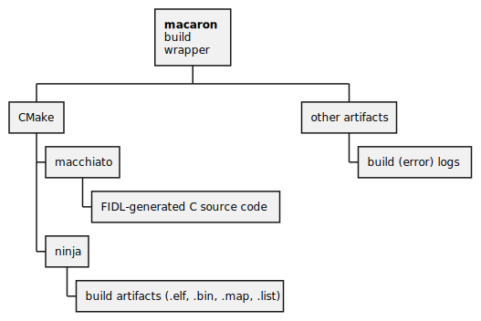
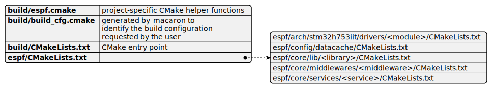

Build structure
The OBC SDK build is orchestrated by several tools each being responsible to generate specific build products. A short overview is presented below:

| Tool |
Build location |
Description |
| macaron build wrapper |
build/macaron.py |
A Python script which performs high-level build orchestration and specific side-tasks which are difficult to manage with CMake alone. This script also provides a front-end for CMake to call the macchiato code generator in an easier and more streamlined way. |
| CMake |
user system dependent |
CMake is an open-source, cross-platform family of tools designed to build, test and package software. CMake is used to control the software compilation process using simple platform and compiler independent configuration files, and generate native makefiles and workspaces that can be used in the compiler environment of your choice. |
| ninja |
user system dependent |
Ninja is a small build system with a focus on speed. It differs from other build systems in two major respects: it is designed to have its input files generated by a higher-level build system, and it is designed to run builds as fast as possible. |
| macchiato |
other/scripts/gen/macchiato/macchiato.jar |
This is a code-generation Xtend-based framework used by EnduroSat to facilitate generation of source code and documentation from Franca IDL files (a.k.a. FIDL). This is the standard EnduroSat way of describing inter-module communication APIs. FIDLs are also used to generate certain parts of the OBC SDK in order to streamline development and enable faster configuration of the system. macchiato usage is documented in detail in a separate package. Please check with your EnduroSat support team on how to obtain the latest reference. |
Building OBC SDK from the console via macaron
If you checked the Quick-start guide already, you know how to build the OBC SDK from the STM32CubeIDE. However, there are times when you would like to automate your builds for easier testing and perhaps call your build process from a CI/CD pipeline. In such scenarios, you should opt for building the OBC SDK from a console using the macaron build wrapper.
As a first step, you shall ensure that you have a correctly setup environment with all necessary tooling in your system path. That would be:
- Python 3+ interpreter
- CMake executable
- ninja executable
- Java Runtime Environment
Now to trigger the build process:
- Open a system console
- Change your working folder by typing
cd <OBC SDK>/build
( replace
replace <OBC SDK> with the actual path where you extracted the OBC SDK sources)
- Start a clean build of the
noboot_debug target by typing python macaron.py -b noboot_debug -c -rl
- If everything is correctly setup, you should observe the same output as the one printed in the STM32CubeIDE console:
1
2
3
4
5
6
7
8
9
10
11
12
13
14
15
16
17
18
19
20
21
22
23
24
25
26
27
28
29
30
31
32
33
34
35
36
37
38
39
40
41
42
43
44
45
46 | 2022-10-17 10:36:49,885 | INFO | <module>:404 | EnduroSat -macaron- build front-end [v0.2]
2022-10-17 10:36:49,886 | DEBUG | <module>:407 | macaron.py started with args: Namespace(build='noboot_debug', release_ver=None, clean=False, clean_gen_content=WindowsPath('.'), fp_gen=False, datacache_gen=False, fp_gen_all=False, depl_config='', fp_merge_root=WindowsPath('.'), verbose=True, error_out_only=False, reset_log=True)
2022-10-17 10:36:49,886 | WARNING | get_build_root_path:84 | ESPF_ROOT_BUILD_PATH environment variable not set. Using default path setting resolving to "C:\Projects\OBC\demo\3.0.2.sdk".
2022-10-17 10:36:49,892 | INFO | print_cmd_info:130 | > starting command: "cmake . -G Ninja Multi-Config -DCMAKE_TOOLCHAIN_FILE=arm_toolchain.cmake"...
2022-10-17 10:36:50,619 | DEBUG | run_cmd:153 | -- The C compiler identification is GNU 10.3.1
2022-10-17 10:36:51,066 | DEBUG | run_cmd:153 | -- The ASM compiler identification is GNU
2022-10-17 10:36:51,198 | DEBUG | run_cmd:153 | -- Found assembler: C:/ST/STM32CubeIDE_1.4.0/STM32CubeIDE/plugins/com.st.stm32cube.ide.mcu.externaltools.gnu-tools-for-stm32.10.3-2021.10.win32_1.0.0.202111181127/tools/bin/arm-none-eabi-gcc.exe
2022-10-17 10:36:51,242 | DEBUG | run_cmd:153 | -- Detecting C compiler ABI info
2022-10-17 10:36:52,001 | DEBUG | run_cmd:153 | -- Detecting C compiler ABI info - done
2022-10-17 10:36:52,043 | DEBUG | run_cmd:153 | -- Check for working C compiler: C:/ST/STM32CubeIDE_1.4.0/STM32CubeIDE/plugins/com.st.stm32cube.ide.mcu.externaltools.gnu-tools-for-stm32.10.3-2021.10.win32_1.0.0.202111181127/tools/bin/arm-none-eabi-gcc.exe - skipped
2022-10-17 10:36:52,044 | DEBUG | run_cmd:153 | -- Detecting C compile features
2022-10-17 10:36:52,045 | DEBUG | run_cmd:153 | -- Detecting C compile features - done
2022-10-17 10:36:52,093 | DEBUG | run_cmd:153 | -- >> Active build configuration: noboot_debug
2022-10-17 10:36:52,256 | DEBUG | run_cmd:153 | -- looking for pre-built library 'C:/Projects/OBC/demo/3.0.2.sdk/build/../lib/noboot_debug/libespsi_drv.a'
2022-10-17 10:36:52,256 | DEBUG | run_cmd:153 | -- looking for pre-built library 'C:/Projects/OBC/demo/3.0.2.sdk/build/../lib/noboot_debug/libespsi_drv.a' - not found - will attempt to build from source
2022-10-17 10:36:52,259 | DEBUG | run_cmd:153 | -- looking for pre-built library 'C:/Projects/OBC/demo/3.0.2.sdk/build/../lib/noboot_debug/libESPSI.a'
2022-10-17 10:36:52,259 | DEBUG | run_cmd:153 | -- looking for pre-built library 'C:/Projects/OBC/demo/3.0.2.sdk/build/../lib/noboot_debug/libESPSI.a' - found - will perform a direct linkage
2022-10-17 10:36:52,260 | DEBUG | run_cmd:153 | -- looking for pre-built library 'C:/Projects/OBC/demo/3.0.2.sdk/build/../lib/noboot_debug/libespf_sub.a'
2022-10-17 10:36:52,260 | DEBUG | run_cmd:153 | -- looking for pre-built library 'C:/Projects/OBC/demo/3.0.2.sdk/build/../lib/noboot_debug/libespf_sub.a' - not found - will attempt to build from source
2022-10-17 10:36:52,485 | DEBUG | run_cmd:153 | -- Configuring done
2022-10-17 10:36:54,306 | DEBUG | run_cmd:153 | -- Generating done
2022-10-17 10:36:54,494 | DEBUG | run_cmd:153 | -- Build files have been written to: C:/Projects/OBC/demo/3.0.2.sdk/build
2022-10-17 10:36:54,506 | INFO | print_cmd_info:130 | > command finished successfully!
2022-10-17 10:36:54,506 | INFO | print_cmd_info:130 | > starting command: "cmake --build . --config noboot_debug"...
2022-10-17 10:36:56,598 | DEBUG | run_cmd:153 | [1/328] Building C object libespsi_drv/CMakeFiles/espsi_drv.dir/noboot_debug/src/esps_drv_stats.c.obj
2022-10-17 10:36:56,598 | DEBUG | run_cmd:153 | [2/328] Building C object libespsi_drv/CMakeFiles/espsi_drv.dir/noboot_debug/src/esps_drv_pool.c.obj
2022-10-17 10:36:56,598 | DEBUG | run_cmd:153 | [3/328] Building C object libespsi_drv/CMakeFiles/espsi_drv.dir/noboot_debug/src/esps_drv_queue.c.obj
2022-10-17 10:36:56,598 | DEBUG | run_cmd:153 | [4/328] Building C object libespsi_drv/CMakeFiles/espsi_drv.dir/noboot_debug/src/esps_drv_dispatcher.c.obj
2022-10-17 10:36:56,598 | DEBUG | run_cmd:153 | [5/328] Building C object libespsi_drv/CMakeFiles/espsi_drv.dir/noboot_debug/src/esps_drv.c.obj
.
.
.
2022-10-17 10:39:03,323 | DEBUG | run_cmd:153 | [324/328] Building C object libespf_sub/payload_ctrl/CMakeFiles/payload_ctrl.dir/noboot_debug/src/payload_ctrl.c.obj
2022-10-17 10:39:03,324 | DEBUG | run_cmd:153 | [325/328] Building C object libespf_sub/payload_ctrl/CMakeFiles/payload_ctrl.dir/noboot_debug/fp/Payload_Control/v0.1/Payload_Control_server/FP_Payload_ControlServerApp.c.obj
2022-10-17 10:39:03,324 | DEBUG | run_cmd:153 | [326/328] Linking C static library libespf_sub\payload_ctrl\noboot_debug\libpayload_ctrl.a
2022-10-17 10:39:10,456 | DEBUG | run_cmd:153 | [327/328] Linking C static library libespf_sub\noboot_debug\libespf_sub.a
2022-10-17 10:39:10,456 | DEBUG | run_cmd:153 | [328/328] Linking C executable noboot_debug\OBC_STDPF_STM32H.elf
2022-10-17 10:39:10,456 | DEBUG | run_cmd:153 | text data bss dec hex filename
2022-10-17 10:39:10,456 | DEBUG | run_cmd:153 | 334752 26080 127160 487992 77238 C:/Projects/OBC/demo/3.0.2.sdk/build/noboot_debug/OBC_STDPF_STM32H.elf
2022-10-17 10:39:10,457 | DEBUG | run_cmd:153 | EnduroSat -macaron- build front-end [v0.2]
2022-10-17 10:39:10,457 | DEBUG | run_cmd:153 | macaron.py started with args: Namespace(build=None, release_ver=None, clean=False, clean_gen_content=WindowsPath('C:/Projects/OBC/demo/3.0.2.sdk/build/../espf'), fp_gen=False, datacache_gen=False, fp_gen_all=False, depl_config='', fp_merge_root=WindowsPath('.'), verbose=False, error_out_only=False, reset_log=False)
2022-10-17 10:39:10,457 | DEBUG | run_cmd:153 | ESPF_ROOT_BUILD_PATH environment variable not set. Using default path setting resolving to "C:\Projects\OBC\demo\3.0.2.sdk".
2022-10-17 10:39:10,457 | DEBUG | run_cmd:153 | cleaning up all directories with name "src-gen-c" under "C:\Projects\OBC\demo\3.0.2.sdk\espf"...
2022-10-17 10:39:10,485 | INFO | print_cmd_info:130 | > command finished successfully!
2022-10-17 10:39:10,485 | INFO | <module>:463 | >>> BUILD OK (140.60 sec) <<<
2022-10-17 10:39:10,486 | INFO | clean_directories_by_name:115 | cleaning up all directories with name "src-gen-c" under "C:\Projects\OBC\demo\3.0.2.sdk\build"...
|
Tip
If you start macaron.py without any options, you will see a list of all options available. Feel free to experiment with those.
Finding build errors more easily...
If something goes wrong with the build, you can pass the -v option to macaron to get even more details printed.
Also, macaron stores a full log of the build process in a file called build/macaron.log. You can open it with any text editor (best viewed with Visual Studio Code due to highglighting support for log files) and inspect what went wrong by searching for error or warn keywords.
CMake build organization
The OBC SDK CMake build is organized in a multi-level hierarchy to promote modularity and enable code reuse at different levels. The overall build structure can be presented in the following way:

OBC SDK CMake files hierarchy
Each CMakeLists.txt file (apart from the top-most) in the build produces a static library and those libraries get linked together to form the final executable image.
Note
Not all parts of the OBC SDK source code are implemented as static libraries. It makes sense to do this for implementations which are reusable between multiple projects or which do not change often, thus decreasing the compilation time required for the whole project.
Tip
For a detailed information on the CMakeLists.txt file for the OBC SDK documentation, please check the comments inside that file. This document does not aim to repeat this information here to ensure the information is always up-to-date.
Build version
The build tool, macaron, gives the option to set the release version of the code which is going to be passed to CMake which will define the version and the description of the build. The format macaron expects is:
Mayor.minor.patch-label (MM.mm.pp[-label])
The label is going to be added to the build description reported by the OBC, which by default will be "STDPF-STM32H_<label>". The maximum length of this field is 30 chars and a longer string will be truncated.
The version string will be written in a file, <OBC SDK>/version, and CMake will use that file to define the version variables that are going to be used for building the code. If CMake can't read a valid version string from the file, it will use a default version.
Default build version
When the build is triggered without specifying the release version (--release-ver option), macaron will then get the latest tag it can find using git, and use that as a version. The version is obtained by using the command git describe (more info about it in the official git documentation).
Important
If the OBC SDK is not part of a git respository or no tags are found, macaron will set a default version: 99.99.99-dev.
Warning
It is not recommended to leave the default version value 99.99.99-dev. The user should use the SDK version instead.
{kind=link}
{kind=link}